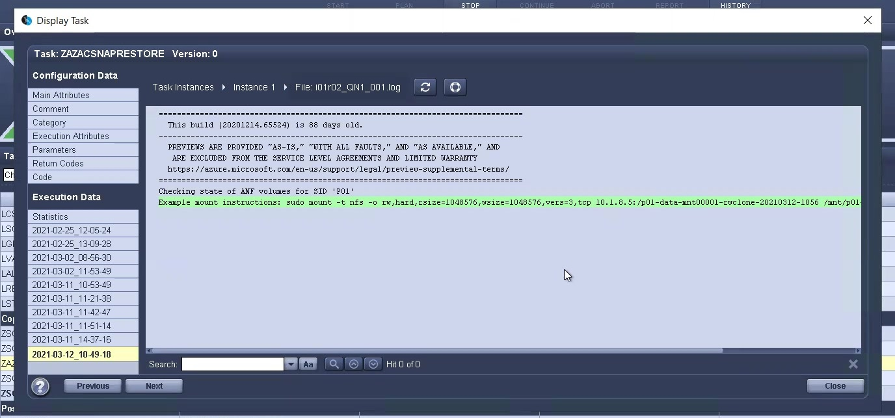

ベストプラクティス
ベストプラクティス
LSC、AzAcSnap、およびAzure NetApp Files を使用してSAP HANAシステムが更新されます
 変更を提案
変更を提案
を使用します "Azure NetApp Files for SAP HANAの略"、Oracle、DB2 on Azureを利用すると、NetApp ONTAP の高度なデータ管理機能とデータ保護機能をMicrosoft Azure NetApp Files 標準サービスで利用できます。 "AzAcSnap" は、SAPシステムの更新処理を高速化して、SAP HANAシステムとOracleシステムのNetApp Snapshotコピーをアプリケーションと整合性のあるものにするための基盤です（DB2は現在AzAcSnapではサポートされていません）。
Snapshotコピーのバックアップは、オンデマンドで作成することも、バックアップ戦略の一環として定期的に作成することもでき、効率的に新しいボリュームにクローニングして、ターゲットシステムを迅速に更新することができます。AzAcSnapは、バックアップを作成して新しいボリュームにクローンを作成するために必要なワークフローを提供します。一方、Libelle SystemCopyは、完全なエンドツーエンドのシステム更新に必要な、前処理と後処理の手順を実行します。
この章では、SAP HANAを基盤データベースとして使用したAzAcSnapおよびLibelle SystemCopyを使用したSAPシステムの自動更新について説明します。AzAcSnapはOracleでも利用できるため、AzAcSnap for Oracleを使用して同じ手順 を実装することもできます。その他のデータベースは、今後AzAcSnapによってサポートされる可能性があります。この場合、LSCおよびAzAcSnapを使用してこれらのデータベースのシステムコピー操作が有効になります。
次の図は、AzAcSnapおよびLSCを使用したSAPシステム更新ライフサイクルの一般的なワークフローを示しています。
-
ターゲットシステムの初期インストールと準備を1回だけ行います。
-
LSCによって実行されるSAP前処理操作。
-
AzAcSnapで実行されるターゲットシステムへのソースシステムの既存のSnapshotコピーのリストア（またはクローニング）。
-
LSCによって実行されるSAP後処理操作。
システムはテストシステムまたはQAシステムとして使用できます。新しいシステムの更新が要求されると、手順2でワークフローが再開されます。残りのクローンボリュームは手動で削除する必要があります。

前提条件および制限事項
次の前提条件を満たしている必要があります。
AzAcSnapがインストールされ、ソースデータベース用に設定されている
一般に、AzAcSnapには次の図に示すように、2つの導入オプションがあります。

AzAcSnapは、すべてのDB構成ファイルが一元的に格納されている中央のLinux VMにインストールして実行できます。AzAcSnapは、すべてのデータベースに（hdbsqlクライアントを介して）すべてのデータベースと、これらすべてのデータベースに設定されたHANAユーザストアキーにアクセスできます。分散型の展開では、AzAcSnapは各データベースホストに個別にインストールされ、通常はローカルデータベースのDB構成のみが格納されます。どちらの展開オプションもLSC統合でサポートされています。ただし、このドキュメントのラボセットアップではハイブリッドアプローチを採用しました。AzAcSnapは、すべてのDB構成ファイルとともに中央のNFS共有にインストールされました。この中央インストール共有は、「/mnt/software/AZACSNAP/snapshot-tool」の下のすべてのVMにマウントされました。その後、このツールはDB VM上でローカルに実行され、
Libelle SystemCopyがソースおよびターゲットのSAPシステム用にインストールおよび設定されていること
Libelle SystemCopyの展開は、次のコンポーネントで構成されています。

-
*LSC Master.*という名前が示すように、これはLibelleベースのシステムコピーの自動ワークフローを制御するマスターコンポーネントです。
-
* LSC Worker。* LSCワーカーは通常、ターゲットSAPシステム上で実行され、自動システムコピーに必要なスクリプトを実行します。
-
* LSC Satellite。* LSCサテライトは、追加のスクリプトを実行する必要があるサードパーティシステムで実行されます。LSCマスターは、LSCサテライトシステムの役割も果たします。
Libelle SystemCopy（LSC）GUIが適切なVMにインストールされている必要があります。この実習セットアップでは、LSC GUIは別のWindows VMにインストールされていますが、LSCワーカーとともにDBホストでも実行できます。LSCワーカーは、少なくともターゲットDBのVMにインストールする必要があります。選択したAzAcSnap展開オプションによっては、LSCワーカーの追加インストールが必要な場合があります。AzAcSnapが実行されるVMにLSCワーカーインストールが必要です。
LSCをインストールした後、ソースおよびターゲットデータベースの基本設定をLSCガイドラインに従って実行する必要があります。次の図は、このドキュメントのラボ環境の構成を示しています。ソースとターゲットのSAPシステムおよびデータベースの詳細については、次のセクションを参照してください。

また、SAPシステムに適した標準のタスクリストを設定する必要があります。LSCのインストールおよび設定の詳細については、LSCインストールパッケージの一部であるLSCユーザマニュアルを参照してください。
既知の制限
ここで説明するAzAcSnapとLSCの統合は、SAP HANAのシングルホストデータベースでのみ機能します。SAP HANAマルチホスト（またはスケールアウト）配置もサポートできますが、このような配置では、コピーフェーズおよびアンダーレイアウトスクリプトのLSCカスタムタスクをいくつか調整または拡張する必要があります。このような機能強化については、本ドキュメントでは説明していません。
SAPシステムの更新機能が統合される際には、ソースシステムのSnapshotコピーが最新で正常に作成され、ターゲットシステムの更新が実行されます。他の古いSnapshotコピーを使用する場合は、の対応するロジックを指定します ZAZACSNAPRESORE カスタムタスクを調整する必要があります。このプロセスについては、本ドキュメントでは説明しません。
ラボのセットアップ
このラボ環境は、ソースのSAPシステムとターゲットのSAPシステムで構成され、どちらもSAP HANAのシングルホストデータベースで実行されます。
次の図は、ラボのセットアップを示しています。

このボリュームには、次のシステム、ソフトウェアバージョン、およびAzure NetApp Files ボリュームが含まれています。
-
* P01。* SAP HANA 2.0 SP5データベース。ソースデータベース、シングルホスト、シングルユーザテナント
-
* PN1.* SAP NetWeaver ABAP 7.51ソースのSAPシステム：
-
* VM-P01。* SLES 15 SP2、AzAcSnapがインストールされている場合。ソースVMでP01とPN1をホストしています。
-
* QL1.* SAP HANA 2.0 SP5データベース。ターゲットデータベース、シングルホスト、シングルユーザテナントのシステム更新
-
* QN1.* SAP NetWeaver ABAP 7.51システム更新の対象となるSAPシステム：
-
* VM-QL1.* LSCワーカーがインストールされたSLES 15 SP2。ターゲットのVMでQL1とQN1をホストしています。
-
LSCマスターバージョン9.0.0.052。
-
* VM-LSC-MMASTER.* Windows Server 2016。LSCマスターおよびLSC GUIをホストします。
-
専用DBホストにマウントされたP01とQL1のデータ、ログ、共有のAzure NetApp Files ボリューム。
-
スクリプト、AzAcSnapのインストール、すべてのVMにマウントされた構成ファイル用のCentral Azure NetApp Files ボリューム。
最初の1回限りの準備手順
最初のSAPシステムの更新を実行する前に、AzAcSnapで実行されるAzure NetApp Files のSnapshotコピーおよびクローニングベースのストレージ処理を統合する必要があります。また、データベースの起動と停止、およびAzure NetApp Files ボリュームのマウントまたはアンマウントを実行する補助スクリプトも実行する必要があります。必要なすべてのタスクは、コピーフェーズの一部としてLSCでカスタムタスクとして実行されます。次の図は、LSCタスクリスト内のカスタムタスクを示しています。

5つのコピー・タスクの詳細については'以下を参照してくださいこれらのタスクの一部では、サンプルスクリプト「sc-system-refresh.sh」を使用して、必要なSAP HANAデータベースのリカバリ処理と、データボリュームのマウントおよびアンマウントをさらに自動化します。スクリプトは、LSCに対する実行が成功したことを示すために、システム出力で「LSC:SUCCESS」メッセージを使用します。カスタムタスクおよび使用可能なパラメータの詳細については、LSCユーザマニュアルおよびLSC開発者ガイドを参照してください。このラボ環境のすべてのタスクは、ターゲットDB VMで実行されます。

|
サンプルスクリプトは現状のまま提供されており、ネットアップではサポートしていません。スクリプトは、mailto：ng-sapcc@netapp.com [ ng-sapcc@netapp.com ^]にEメールで送信できます。 |
Sc-system-refresh.sh構成ファイル
前述したように、補助スクリプトを使用して、データベースの起動と停止、Azure NetApp Files ボリュームのマウントとアンマウント、およびSnapshotコピーからのSAP HANAデータベースのリカバリを行います。スクリプト「sc-system-refresh.sh」は中央NFS共有に格納されます。スクリプトでは、ターゲットデータベースごとに構成ファイルが必要です。このファイルは、スクリプト自体と同じフォルダに格納する必要があります。コンフィギュレーションファイルには、「sc-system-refresh-<target DB SID>.cfg」という名前（この実習環境では「sc-system-refresh-ql1.cfg」など）を付ける必要があります。ここで使用する構成ファイルでは、固定/ハードコーディングされたソースDB SIDを使用します。いくつかの変更により、スクリプトと構成ファイルを拡張して、ソースDB SIDを入力パラメータとして取得できます。
特定の環境に応じて、次のパラメータを調整する必要があります。
# hdbuserstore key, which should be used to connect to the target database
KEY=”QL1SYSTEM”
# single container or MDC
export P01_HANA_DATABASE_TYPE=MULTIPLE_CONTAINERS
# source tenant names { TENANT_SID [, TENANT_SID]* }
export P01_TENANT_DATABASE_NAMES=P01
# cloned vol mount path
export CLONED_VOLUMES_MOUNT_PATH=`tail -2 /mnt/software/AZACSNAP/snapshot_tool/logs/azacsnap-restore-azacsnap-P01.log | grep -oe “[0-9]*\.[0-9]*\.[0-9]*\.[0-9]*:/.* “`
ZSCCOPYSHUTDOWN
このタスクは、ターゲットのSAP HANAデータベースを停止します。このタスクの[コード]セクションには、次のテキストが含まれています。
$_include_tool(unix_header.sh)_$ sudo /mnt/software/scripts/sc-system-refresh/sc-system-refresh.sh shutdown $_system(target_db, id)_$ > $_logfile_$
スクリプト「sc-system-refresh.sh」は'shutdownコマンドとDB SIDの2つのパラメータを取り'sapcontrolを使用してSAP HANAデータベースを停止しますシステム出力は標準のLSCログファイルにリダイレクトされます。前述のように、「lsc：success」メッセージは、正常に実行されたことを示します。

ZSCCOPYUMOUNT
このタスクでは、ターゲットのDBオペレーティングシステム（OS）から古いAzure NetApp Files データボリュームをアンマウントします。このタスクのコードセクションには、次のテキストが含まれています。
$_include_tool(unix_header.sh)_$ sudo /mnt/software/scripts/sc-system-refresh/sc-system-refresh.sh umount $_system(target_db, id)_$ > $_logfile_$
前のタスクと同じスクリプトが使用されます。渡される2つのパラメータは'umount'コマンドとDB SIDです
ZAZACSNAPRESORE
このタスクでは、AzAcSnapを実行して、ソースデータベースの最新の成功したSnapshotコピーを、ターゲットデータベースの新しいボリュームにクローニングします。この処理は、従来のバックアップ環境でのバックアップのリダイレクトリストアに相当します。ただし、Snapshotコピーとクローニング機能を使用すれば、最大のデータベースであっても数秒でこのタスクを実行できます。従来のバックアップでは、このタスクに数時間かかることもありました。このタスクのコードセクションには、次のテキストが含まれています。
$_include_tool(unix_header.sh)_$ sudo /mnt/software/AZACSNAP/snapshot_tool/azacsnap -c restore --restore snaptovol --hanasid $_system(source_db, id)_$ --configfile=/mnt/software/AZACSNAP/snapshot_tool/azacsnap-$_system(source_db, id)_$.json > $_logfile_$
AzAcSnapの'restore'コマンド・ライン・オプションに関する完全なドキュメントはAzureのドキュメントを参照してください "Azure Application Consistent Snapshotツールを使用してリストア"。この呼び出しでは、ソースDBのJSON DB構成ファイルが、「azacsnap -<source DB SID>」という命名規則に従って中央のNFS共有にあることが前提となります。JSON形式（このラボ環境では'azacsnap-p0P01 JSONなど）
|
|
AzAcSnapコマンドの出力は変更できないため、このタスクにはデフォルトの「LSC:SUCCESS」メッセージを使用できません。そのため'AzAcSnap出力の文字列'Example mount instructionsが'成功した戻りコードとして使用されます5.0 GAバージョンのAzAcSnapでは、この出力はクローニングプロセスが成功した場合にのみ生成されます。 |
次の図に、新しいボリュームへのAzAcSnapリストア成功メッセージを示します。

ZSCCOPYMOUNT
このタスクでは、ターゲットDBのOSに新しいAzure NetApp Files データボリュームをマウントします。このタスクのコードセクションには、次のテキストが含まれています。
$_include_tool(unix_header.sh)_$ sudo /mnt/software/scripts/sc-system-refresh/sc-system-refresh.sh mount $_system(target_db, id)_$ > $_logfile_$
sc-system-refresh.shスクリプトが再び使用され'mountコマンドとターゲットDB SIDが渡されます
ZSCCOPYRECOVER
このタスクでは、リストア（クローン）されたSnapshotコピーに基づいて、システムデータベースとテナントデータベースのSAP HANAデータベースのリカバリを実行します。ここで使用するリカバリ・オプションは、フォワード・リカバリに適用される特定のデータベース・バックアップ（追加ログなしなど）を対象としています。したがって、リカバリ時間は非常に短くなります（最大で数分）。この処理の実行時間は、リカバリプロセス後に自動的に実行されるSAP HANAデータベースの起動によって決まります。起動時間を短縮するために、必要に応じて、次のAzureのドキュメントに従ってAzure NetApp Files データボリュームのスループットを一時的に向上させることができます。 "ボリュームクォータの動的な増減"。このタスクのコードセクションには、次のテキストが含まれています。
$_include_tool(unix_header.sh)_$ sudo /mnt/software/scripts/sc-system-refresh/sc-system-refresh.sh recover $_system(target_db, id)_$ > $_logfile_$
このスクリプトは'recover'コマンドとターゲットDB SIDとともに再び使用されます
SAP HANAシステムの更新処理
このセクションでは、ラボシステムの更新処理のサンプルとして、このワークフローの主な手順を記載します。
バックアップカタログに記載されたP01ソースデータベースの定期的なSnapshotコピーとオンデマンドSnapshotコピーが作成されている。

更新処理には、3月12日の最新バックアップが使用されています。バックアップの詳細セクションに、このバックアップの外部バックアップID（EBID）が表示されます。次の図に示すように、Azure NetApp Files データボリューム上の、対応するSnapshotコピーバックアップのSnapshotコピー名を指定します。

更新操作を開始するには、LSC GUIで正しい設定を選択し、[実行の開始]をクリックします。

LSCは、チェックフェーズのタスクの実行を開始し、プリフェーズの設定済みタスクを実行します。

移行前フェーズの最後のステップとして、移行先のSAPシステムが停止します。次のコピーフェーズでは、前のセクションで説明したステップが実行されます。まず、ターゲットのSAP HANAデータベースが停止し、古いAzure NetApp Files ボリュームがOSからアンマウントされます。

次に、ZAZACSNAPRESTOREタスクで、P01システムの既存のSnapshotコピーからクローンとして新しいボリュームを作成します。次の2つの図は、LSC GUIでのタスクのログ、およびAzureポータルでのクローンAzure NetApp Files ボリュームを示しています。


その後、この新しいボリュームがターゲットDBホストとシステムデータベースにマウントされ、テナントデータベースが、包含するSnapshotコピーを使用してリカバリされます。リカバリが完了すると、SAP HANAデータベースが自動的に起動します。このSAP HANAデータベースの起動は、コピーフェーズのほとんどの時間を占めています。残りの手順は、データベースのサイズに関係なく、通常数秒で終了します。次の図は、SAPが提供するPythonリカバリスクリプトを使用してシステムデータベースをリカバリする方法を示しています。

コピーフェーズ後、LSCはPostフェーズで定義されたすべてのステップで継続します。システムの更新プロセスが完了すると'ターゲット・システムは再び稼働し'完全に使用可能になりますこのラボシステムでは、SAPシステムの更新に必要な合計実行時間は約25分でした。このうち、コピーフェーズで消費される時間は5分未満です。